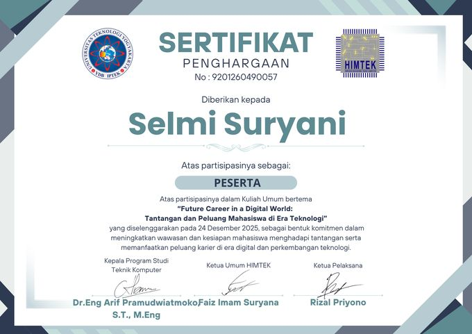
Seminar
Future Career in a Digital World
Challenges and opportunities for students in the technology era
HIMTEK Universitas Teknologi Yogyakarta
24 December 2025Certificate —
Awards, professional certifications, seminars, and training records — 24 documents in total. Click any card to open the original file.

Challenges and opportunities for students in the technology era
HIMTEK Universitas Teknologi Yogyakarta
24 December 2025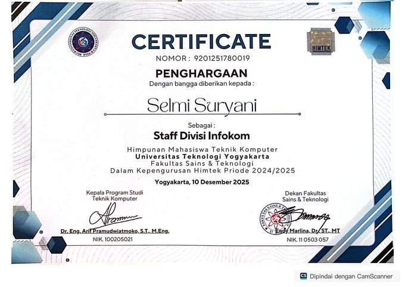
HIMTEK Pride 2024/2025 board
HIMTEK Universitas Teknologi Yogyakarta
10 December 2025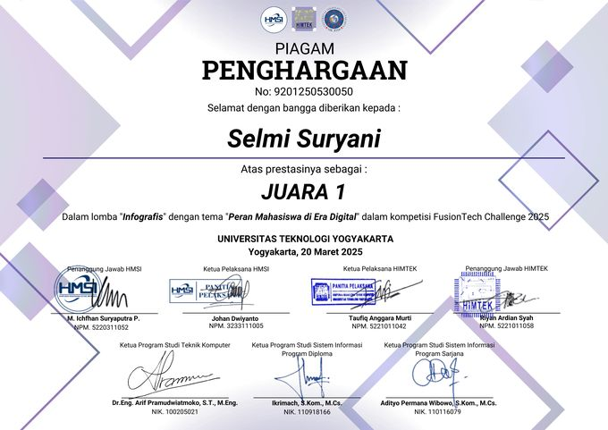
The Role of Students in the Digital Era
FusionTech Challenge
20 March 2025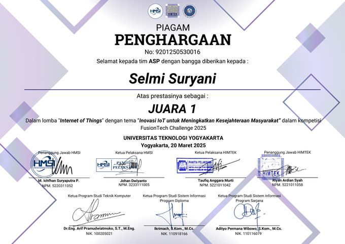
IoT Innovation to Improve Community Welfare
FusionTech Challenge
20 March 2025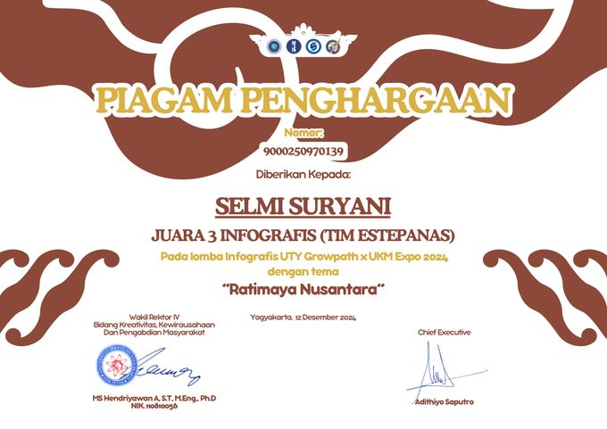
Ratimaya Nusantara
UTY Growpath × UKM Expo
12 December 2024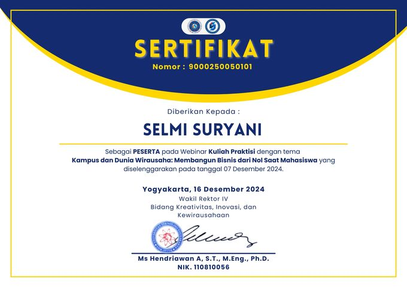
Building a business from zero as a student — practitioner lecture
Universitas Teknologi Yogyakarta
7 December 2024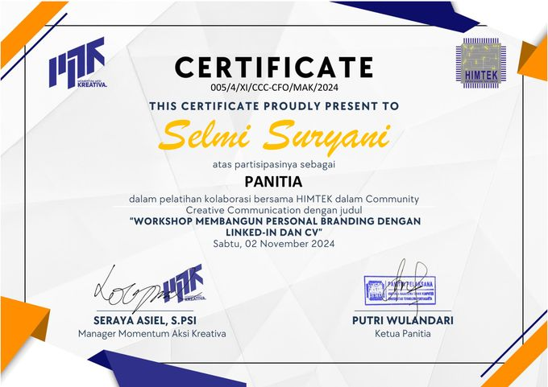
Workshop — served on the committee
HIMTEK Universitas Teknologi Yogyakarta
2 November 2024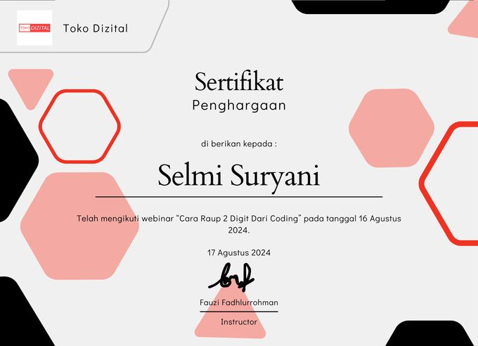
Webinar
Toko Digital
16 August 2024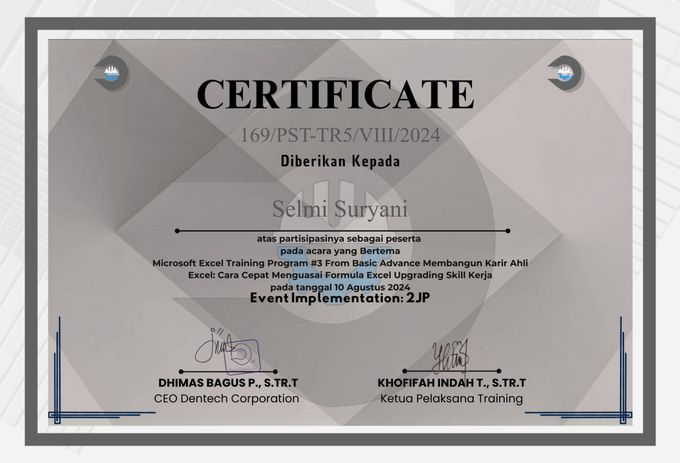
From basic to advanced — upgrading Excel skills for work
Dentech Corporation
10 August 2024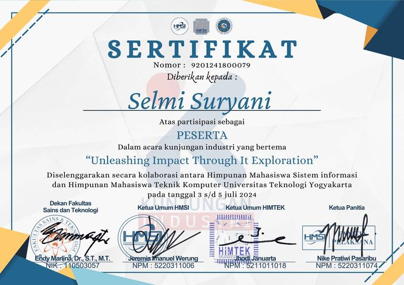
Unleashing Impact Through IT Exploration
HMIF UPI YAI × HIMTEK UTY
3–4 July 2024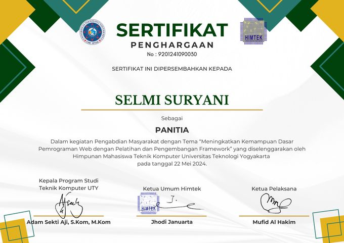
Training and framework development — served on the committee
HIMTEK Universitas Teknologi Yogyakarta
22 May 2024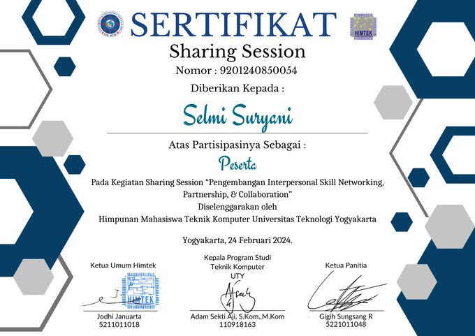
Networking, Partnership & Collaboration — sharing session
HIMTEK, Universitas Teknologi Yogyakarta
24 February 2024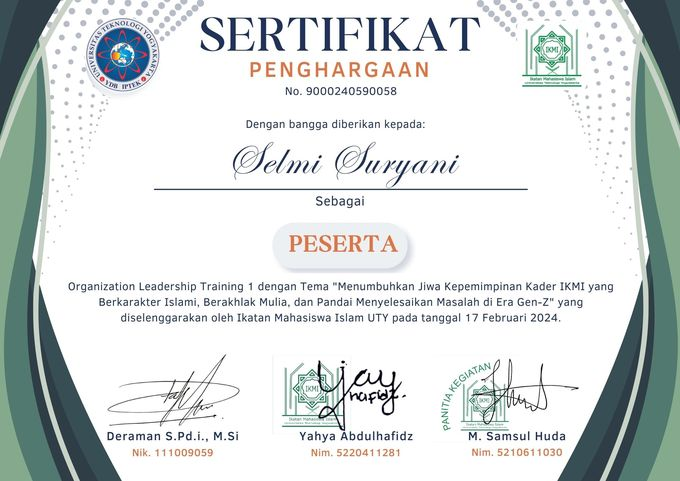
Growing IKMI cadres with Islamic character and problem-solving skills
Islamic Student Association (IKMI) UTY
17 February 2024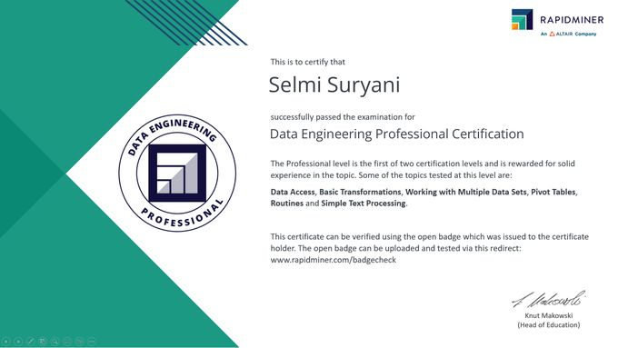
Professional level certification
RapidMiner — an Altair Company
2024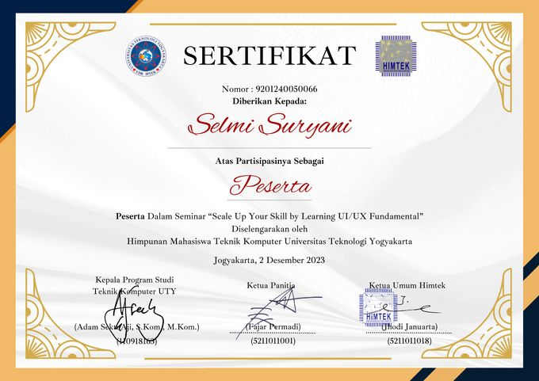
Seminar
HIMTEK Universitas Teknologi Yogyakarta
2 December 2023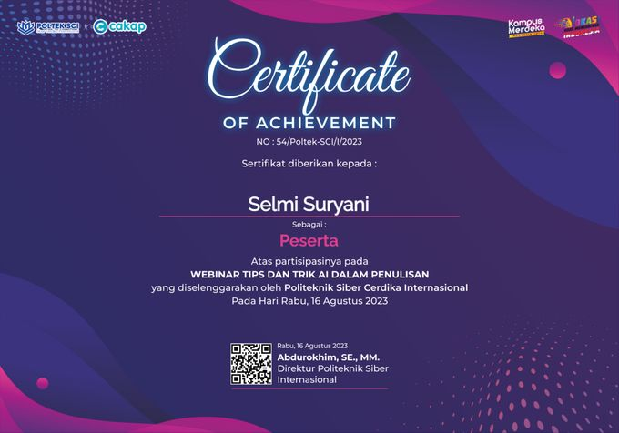
Webinar
Politeknik Siber Cerdika Internasional
16 August 2023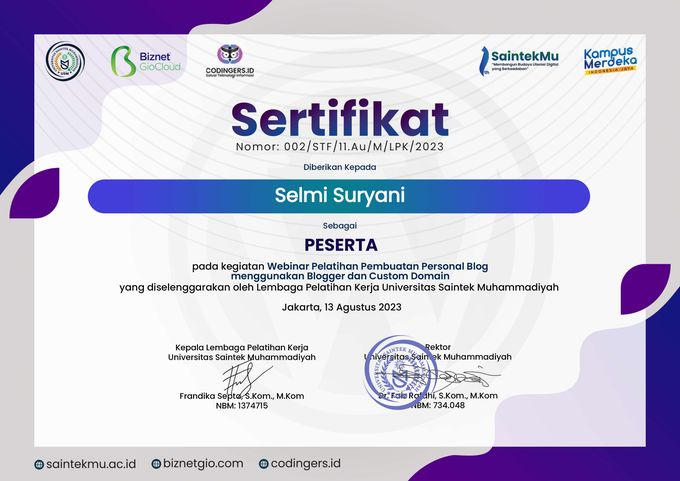
Webinar on using Blogger with a custom domain
Universitas Saintek Muhammadiyah Training Centre
13 August 2023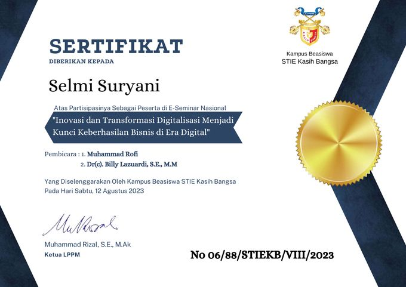
The key to business success in the digital era
STIE Kasih Bangsa
12 August 2023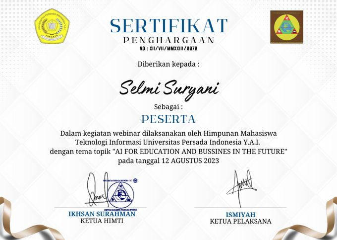
Webinar
HIMTI Universitas Persada Indonesia Y.A.I.
12 August 2023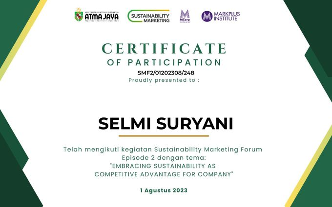
Embracing sustainability as a competitive advantage for company
Atma Jaya × MarkPlus Institute
1 August 2023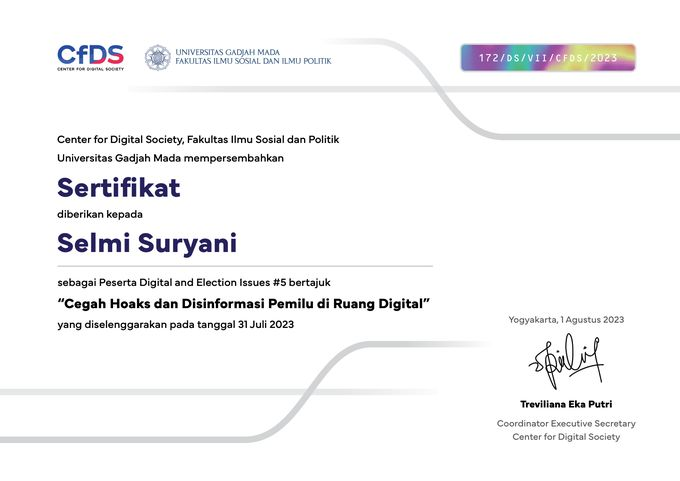
Preventing hoaxes and disinformation in the digital election space
Center for Digital Society (CfDS), FISIPOL UGM
31 July 2023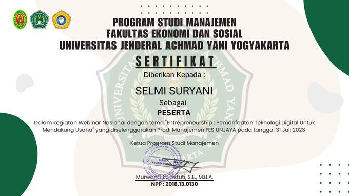
National webinar
Universitas Jenderal Achmad Yani Yogyakarta
31 July 2023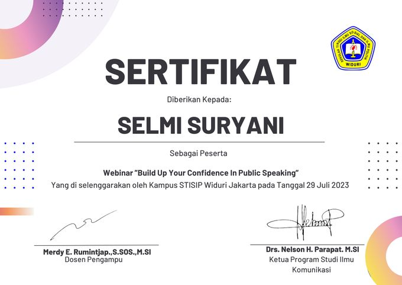
Webinar
STISIP Widuri Jakarta
29 July 2023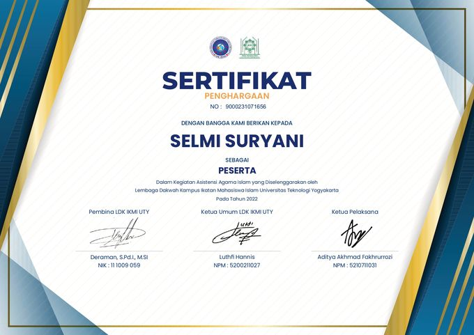
Annual Week 2022
LDK IMM Universitas Teknologi Yogyakarta
2022Every certificate above can be opened in full — they are the original documents, not reconstructions.